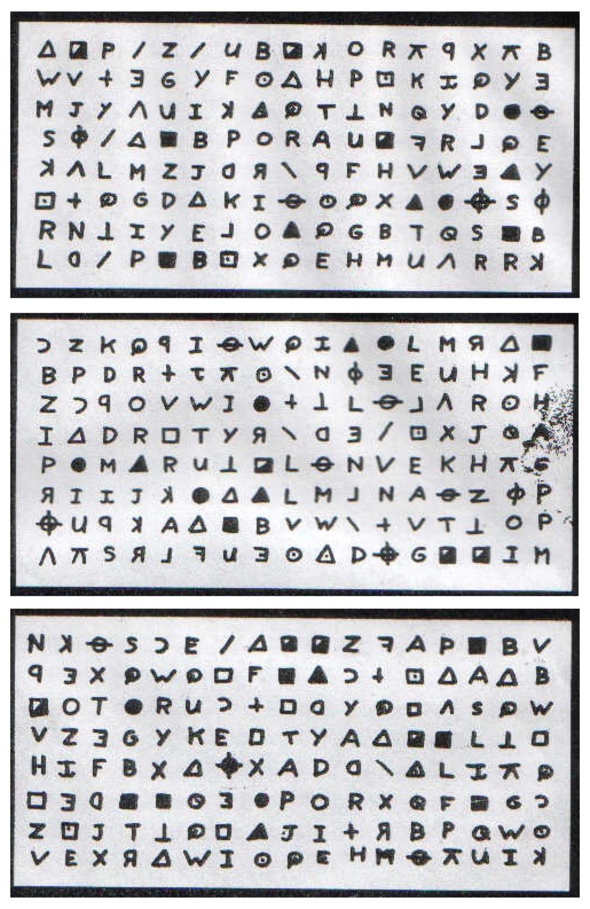
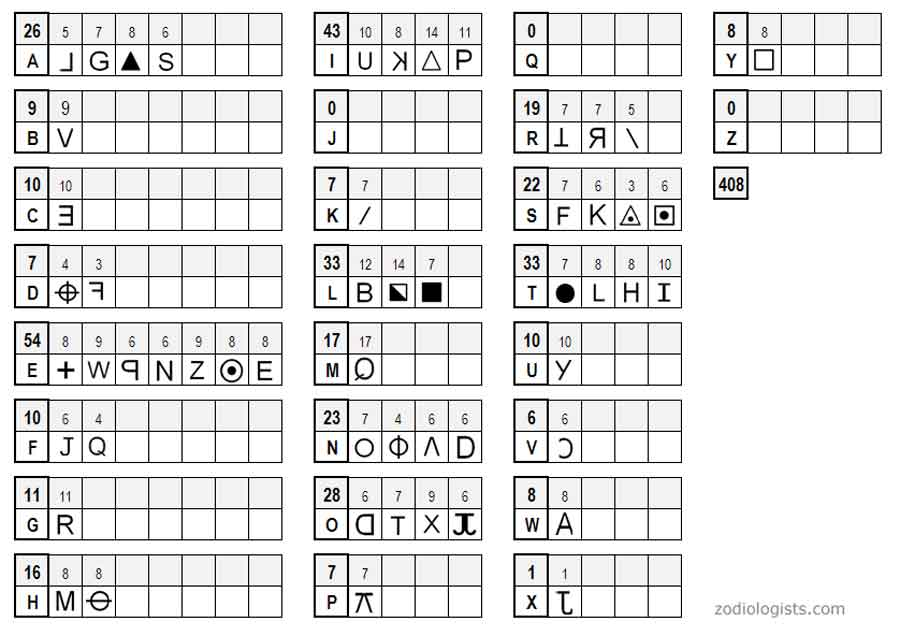

Short Intro to Language Models
What does GPT-3 do?
Do you like poetry?
. . .
A rose is a rose is a rose
. . .
Gertrude Stein. . .
Brexit means Brexit means Brexit
. . .
John Crace. . .
Elementary my dear Watson
. . .
P.G. Woodehouse. . .
There is an easy way for the government to end the strike without withdrawing the pension reform,
. . .
Complete Text
Generative language models perform text completion
They generate plausible1 text following a prompt.
The type of answer, will depend on the kind of prompt.
GPT3 Playground
To use GPT-3 profficiently, you have to experiment with the prompt.
- try the Playground mode
It is the same as learning how to do google queries
- altavista:
+noir +film -"pinot noir" - nowadays: ???
Some Examples
By providing enough context, it is possible to perform amazing tasks
How does it do it?
Language Models and Cryptography

The Caesar code


Later in 2001, in a prison, somewhere in California
. . .
Solved by Stanford’s Persi Diaconis and his students using Monte Carlo Markov Chains
Monte Carlo Markov Chains
Take a letter \(x_n\), what is the probability of the next letter being \(x_{n+1}\)?
\[\pi_{X,Y} = P(x_{n+1}=Y, x_{n}=X)\]
for \(X=\{a, b, .... , z\} , Y=\{a,b,c, ... z\}\)
The language model can be trained using dataset of english language.
And used to determine whether a given cipher-key is consistent with english language.
It yields a very efficient algorithm to decode any caesar code (with very small sample)
MCMC to generate text
MCMCs can also be used to generate text:
- take initial prompt:
I think therefore I- last letter is
I - most plausible character afterwards is
- most plausible character afterwards is
I
- last letter is
- Result:
I think therefore I I I I I I
Not good but promising (ü§∑)
MCMC to generate text
Going further
- augment memory
fore I> ???
- change basic unit (use phonems or words)
An example using MCMC
- using words and 3 states
He ha ‘s kill’d me Mother , Run away I pray you Oh this is Counter you false Danish Dogges .
Big MCMC
Can we augment memory?
- if you want to compute the most frequent letter (among
26) after50letters, you need to take into account5.6061847e+70combinations !- impossible to store, let alone do the training
- but some combinations are useless:
wjai dfniDespite the constant negative press covfefeü§î
Reccurrent Neural Networks

Neural networks make it possible to increase the state-space to represent
\[\forall X, P(x_n=X| x_{n-1}, ..., x_{n-k})\]
they reduce endogenously the dimensionality.
Recurrent Neural Networks
In 2015
- Neural Network reduce dimensionality of data discovering structure
Long Short Term Memory

- 2000->2019 : Emergence of Long Short Term Memory models
speech recognition
LSTM behind “Google Translate”, “Alexa”, …
The Latest: Transformer
- Position Encodings
- model is not sequential anymore
- tries to learn sequence
- Attention
- Self-Attention

Quick summary
- Language models
- frequency tables
- monte carlo markov chains
- long-short-term memory (>2000)
- transformers (>2018)
. . .
- Since 2010 main breakthrough came through the development of deep-learning techniques (software/hardware)
- Recently, models/algorithms have improved tremendously
GPT3
Generative Pre-trained Transformer
- GPT1 (1018)
- 0.1 billion parameters
- had to be fine-tuned to a particular problem
- transfer learning (few shots learning)
- GPT2:
- multitask
- no mandatory fine tuning
- GPT3:
- bigger: 175 billions parameters
- GPT4:
- even bigger: 1000 billions parameters
- on your harddrive: 1Tb
Corpus
GPT 3 was trained on
- CommonCrawl
- WebText
- Wikipedia
- many books
45 TB of data
- cured into ???
Dataset (mostly) ends in 2021.
Chat GPT
It is trivial to make a chatbot using GPT3.
ChatGPT is an interface on top of GPT3.5 (now GPT4) plus some fine-tuning.
- it keeps the context
- has a consistent “personality”
The Relation between GPT-3 and ChatGPT
Technical paper is not out, but we know the following:
- it is fine-tuned by interacting with humans
- it uses reinforcement learning to optimize learning
- now based on GPT4
Improvment goals:
- better alignment
- less making up of facts
How can we use GPT3
Generate Text
Would you use GPT3 to:
- write a paper?
- quickly respond to an email
- write the boring details of a paper
- get some ideas?
- help you structure a talk?
There are several concerns…
The quality of the generated text
GPT-3 has the tendancy to hallucinate facts.
- like kids who don’t distinguish facts and play
This is being worked on:
- GPT4: Can you teach old dogs new tricks? yes üêï
Still a problem for research
Possibly solved by mixing AI and traditional computing
Ethical Concerns
We must avoid at all cost plagiarism and credit our sources.
We need personal ethics:
- give sources
- mention use of GPT3 we we use it
Replace Many NLP Algorithms
Beyond generating text, most Natural Language Processing tasks can be now done with GPT-3:
- Named entity recognition
- Classification
- sentiment analysis
- multimodel sentiment analysis
- Entity linking
- Summarization
- Many more
Named Entity recognition
Prompt:2
[Text]: Helena Smith founded Core.ai 2 years ago. She is now the CEO and CTO of the company and is building a team of highly skilled developers in machine learning and natural language processing.
[Position]: CEO and CTO
###
[Text]: Tech Robotics is a robot automation company specialized in AI driven robotization. Its Chief Technology Officer, Max Smith, says a new wave of improvements should be expected for next year.
[Position]: Chief Technology Officer
###
[Text]: François is a Go developer. He mostly works as a freelancer but is open to any kind of job offering!
[Position]: Go developer
###
[Text]: Maxime is a data scientist at Auto Dataset, and he's been working there for 1 year.
[Position]:. . .
Response: Data Scientist
Fine-tuning (1)
- To get better result, or to proceed larger amounts of data, pretrain the model
```{python}
model.train("""
"[Text]: Helena Smith founded Core.ai 2 years ago. She is now the CEO and CTO of the company and is building a team of highly skilled developers in machine learning and natural language processing.
[Position]: CEO and CTO
""")
``````{python}
model.train("""
[Text]: Tech Robotics is a robot automation company specialized in AI driven robotization. Its Chief Technology Officer, Max Smith, says a new wave of improvements should be expected for next year.
[Position]: Chief Technology Officer
""")
```Fine-tuning (2)
- Query the model:
```{python}
model.eval("""
[Text]: Maxime is a data scientist at Auto Dataset, and he's been working there for 1 year.
[Position]:
""")
```…
[Text]: Maxime is a data scientist at Auto Dataset, and he's been working there for 1 year.
[Position]: Data Scientist```Sentiment Analysis
Zero-shot learning:
Decide whether a Tweet's sentiment is positive, neutral, or negative.
Tweet: "I loved the new Batman movie!"
Sentiment:Output: Positive
Conclusion
Are we on the way to General Artificial Intelligence?
. . .
My two cents:
. . .
- artificial intelligence is already there (we are fooling ourselves…)
- are we ready for artificial humanity?